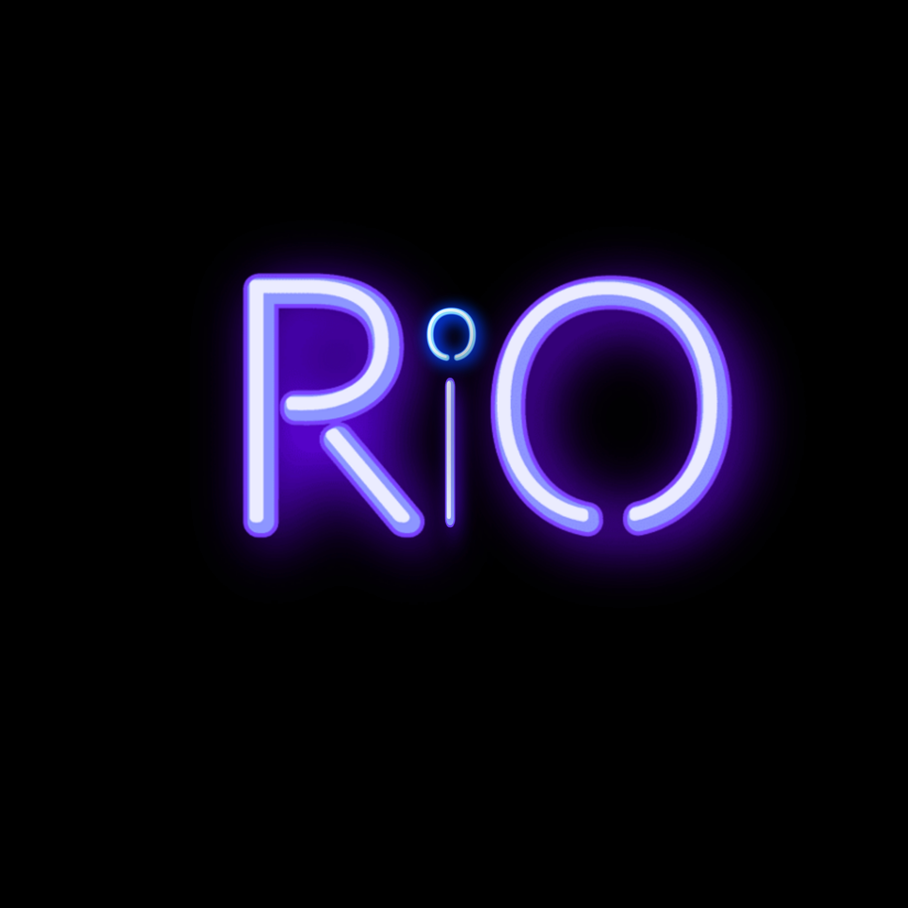

Rio — Personal AI Assistant

Project Description
Rio is a Python-based personal AI assistant that performs a wide range of tasks — web searches, system control, media playback, and automation — using voice commands and a PyQt5 GUI.
Features
- Voice Commands: Open applications, search the web, play music via voice
- Web Integration: Search Wikipedia, Google, YouTube; fetch latest news headlines
- System Control: Open/close apps (VS Code, Chrome, Notepad); shutdown, restart, sleep
- Media Playback: Play local music and movies; control playback and volume
- Automation: Screenshots, PDF reading, file management
- Interactive GUI: Modern PyQt5 interface
Technical Stack
- Language: Python
- Speech: pyttsx3 (TTS), speech_recognition
- GUI: PyQt5
- Automation: pyautogui
- Web: requests, BeautifulSoup
How It Works
- Rio greets the user and listens for voice commands.
- Commands are recognized and mapped to tasks (search, control, media, etc.).
- Output is delivered via text-to-speech or GUI updates.